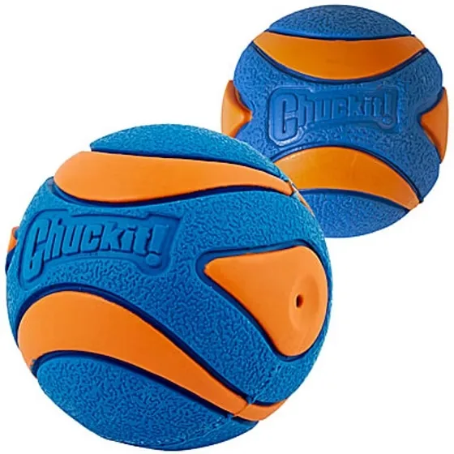
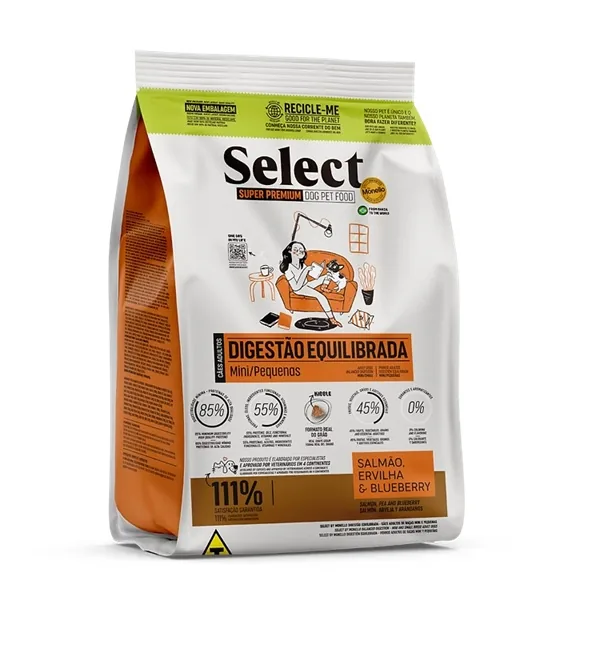
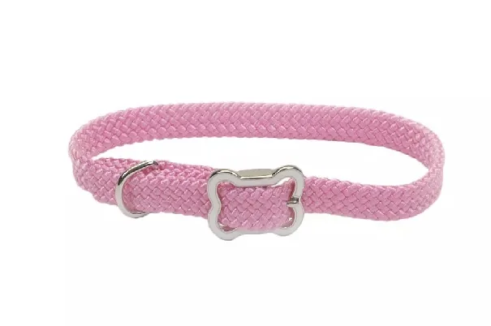

01
Referencia de catálogo
Chuckit! Ultra Squeaker Ball
Pelota con sonido; comprobar tamaño y uso en la ficha oficial.

Imagen publicada por Family Pet GuatemalaJuego, alimentación y accesorios en una selección de Family Pet. Organiza la próxima reposición con datos que ya conoces.
Guarda tus referencias en una lista local y prepara el siguiente paso. Precios, variantes y existencias se revisan en cada ficha oficial.
Pelota con sonido; comprobar tamaño y uso en la ficha oficial.

Alimento de la categoría publicada para razas mini y pequeñas; no constituye recomendación nutricional.

Collar de 3/8 de pulgada, publicado en rosado, celeste y azul.
Tienda con carrito, variantes y pago online; publica entregas en la capital y envíos a departamentos.
Prueba cantidades y condiciones. Obtén un resumen local para revisar antes de hablar con la empresa.
Datos revisados el 3 de noviembre de 2026. La empresa confirma cualquier condición vigente.
Pelota con sonido; comprobar tamaño y uso en la ficha oficial.
Alimento de la categoría publicada para razas mini y pequeñas; no constituye recomendación nutricional.
Collar de 3/8 de pulgada, publicado en rosado, celeste y azul.
El catálogo incluye categorías para ambas mascotas.
Las fichas muestran opciones de presentación o talla según producto.
El sitio incluye carrito y proceso de compra.
La web anuncia envíos a departamentos; confirmar cobertura en la compra.
No. Usa un consumo introducido por el usuario y no prescribe alimentos ni dosis.